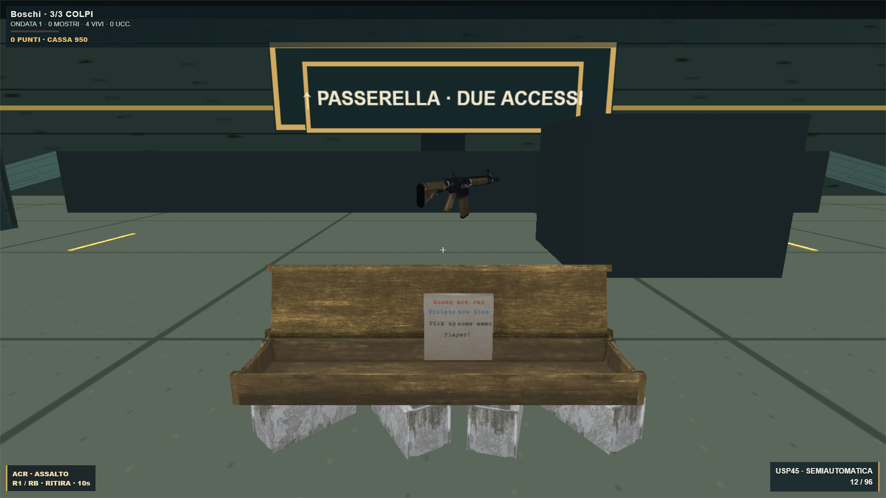

Orda · Mystery Box
50 punti per uccisione · 950 punti per estrazione · tre colpi per morire. La cassa usa il modello fornito, nelle versioni originali chiusa e aperta. Il giocatore che paga ha dieci secondi per ritirare l’arma casuale.
Avvicinati e premi RB / R1 sul pad o CASSA sul telefono. Lo stesso comando serve per ritirare l’arma. Saldo e colpi rimasti sono visibili nell’HUD.

Test logica, input pad e telefono, cinque visuali, verifica visiva, typecheck e build superati. Dettagli verifiche · Party Game
Modello: Navillus360, CC BY 4.0. Nessun commit, push o deploy.